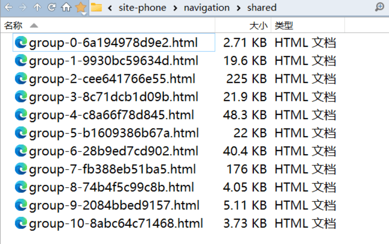

博客共享侧边栏实现原理
一、场景说明
当前博客有大量文章，许多文章的左侧共享一个侧边栏。如果一个文件更新了，需要重新构建所有文章页面，这样会导致构建速度非常慢。所以需要一种方式，只重新构建该文件的页面，而不是所有文件。
当前实现是：构建完整文章页面，但把页面中的左侧导航替换为占位区域；浏览器打开页面后，再加载当前栏目共享的导航片段。
文章页面仍然包含顶部栏目、正文、右侧文章目录、样式和脚本引用等内容。只有原先重复嵌入的完整左侧导航被抽离。
二、问题一：一个网页怎么加载两部分 HTML？
2.1 浏览器显示的是 DOM 树
浏览器收到 HTML 后，会把它解析成 DOM 树。页面显示出来以后，JavaScript 仍然可以往这棵树里添加节点。新加入的节点与原有正文参与同一个页面的布局，并使用页面里已经加载的 CSS。
文章页面最初可以理解为下面的结构。这是说明原理的简化代码，不是项目模板的完整内容：
<body>
<header>顶部栏目</header>
<aside id="sidebar">
加载栏目目录…
</aside>
<main>
<h1>文章标题</h1>
<p>文章正文……</p>
</main>
</body>
2.2 脚本生成专门的侧边栏文件
正如开头所说的，许多文件的左侧共享一个侧边栏。所以脚本会生成专门的侧边栏文件，如下图所示。

每个文件名后面那么多数字和字母，其实是根据内容计算的哈希，只要保证唯一性即可。把文件里面的代码替换到上面的 sidebar 区域即可。
2.3 JavaScript 请求导航片段并插入页面
请求侧边栏的方式
页面脚本发起另一次 HTTP 请求，取得当前栏目公共导航文件的文本，然后将它插入侧边栏区域：
// 示意代码
const response = await fetch("/navigation/shared/group-3-012345abcdef.html");
const html = await response.text();
document.querySelector("#sidebar").innerHTML = html;
返回的就是是 HTML 片段，赋值给 innerHTML 后，浏览器将这段文本解析成节点，放入现有页面。
如何知道请求哪一个
上面请求是如何知道要请求哪个侧边栏呢，其实在每个页面中都写好了：
<div
data-shared-navigation="../../navigation/shared/group-3-012345abcdef.html"
data-site-root="../../"
aria-busy="true">
<a href="../../">占位区域，请求成功，这一整行会被替换为导航节点…</a>
</div>
其中：
| 属性 | 用途 |
|---|---|
data-shared-navigation |
目录 HTML 的地址，相对于当前页面解析 |
data-site-root |
站点根目录，用来解析共享目录内部的链接和图片地址 |
aria-busy |
表示目录是否仍在加载；加载结束或失败后设为 false |
解析站点地址
上面请求是用的相对总地址的请求，所以需要一开始先解析站点地址：
var root = new URL(
container.dataset.siteRoot,
window.location.href
);
举例子：
new URL(
"../../../",
"http://127.0.0.1:8000/Language/CPP/cpp_constexpr/"
);
// 得到：http://127.0.0.1:8000/
new URL("Language/Python/", root).href;
// 得到：http://127.0.0.1:8000/Language/Python/
完整过程如下：
打开文章地址
↓
取得完整文章 HTML：正文 + 页面框架 + 导航占位区域
↓
执行页面 JavaScript
↓
请求所属栏目的公共导航片段
↓
将导航节点插入占位区域
↓
根据当前文章地址设置高亮、展开父目录
因此，最终只有一个页面、一棵 DOM 树。文章内容来自首次请求，导航片段来自后续请求。
2.3 高亮部分处理
侧边栏会高亮当前文章，所以如果不做处理，这部分会有问题。
插入导航后，脚本比较当前页面 URL 与导航链接，给匹配文章设置高亮和 aria-current="page"，再展开它的父目录。这样，同一份 Language 导航既可以用于 Python 文章，也可以用于 CPP 文章。
三、问题二：没有命令选项，怎么拆开侧边栏？
3.1 侧边栏由主题模板决定
构建命令负责组织构建过程，而页面里哪些位置输出什么 HTML，由主题模板决定。因此，拆分左侧导航不要求命令行提供专门选项。
原先的模板逻辑可以简化为：
<aside>
{% include "partials/nav.html" %}
</aside>
<main>
{{ page.content }}
</main>
构建每篇文章时，partials/nav.html 会展开导航树，产生导航 HTML。结果就是很多文章页面重复保存相同目录。
3.2 覆盖模板，改成输出占位区域
项目已有自定义主题模板目录。我们在 overrides/base.html 中，将左侧导航的引用改为：
{% include "partials/shared-nav.html" %}
新的 shared-nav.html 先判断文章所属的顶部栏目，再通过生成的清单取得该栏目的公共导航路径。它的实际输出结构是：
<div data-shared-navigation="{{ shared.path(selected.index) | url }}"
data-site-root="{{ base_url }}/"
aria-busy="true">
<a href="{{ '.' | url }}">加载栏目目录…</a>
</div>
其中：
data-shared-navigation：当前栏目导航片段的地址。data-site-root：用于解析片段内链接的站点根地址。aria-busy：表示目录仍在加载。
这里不再展开整棵左侧导航，但正文和页面其他部分仍然按原来的模板流程生成。
四、文件更新与浏览器缓存如何处理？
公共导航文件名带有根据内容计算的哈希，实际名称类似：
navigation/shared/group-6-48ff05914319.html
只修改文章正文时，导航结构不变，公共导航文件也不需要变化。同栏目文章引用相同地址，浏览器可以按照 HTTP 缓存规则复用已有响应；是否重新请求，还取决于服务端缓存头和浏览器设置。
调整某个栏目目录后，导航内容改变，生成器会计算新的文件名。重新构建的文章页面引用新地址，浏览器便会获取新的导航片段。
五、解决结果
以前每篇文章 HTML 都携带大量重复导航。抽离后，构建产物中的 HTML 总量从约 817 MiB 降到 84 MiB。这是此前两次产物统计的结果，主要收益来自减少重复导航。
六、对应源码位置
以下为维护时应修改的源码位置，生成目录中的文件会被后续构建覆盖。
| 文件 | 用途 |
|---|---|
D:\Blog\scripts\web\generate_shared_navigation.py |
生成公共导航片段和路径清单 |
D:\Blog\scripts\web\overrides\base.html |
完整页面模板，引用共享导航占位模板 |
D:\Blog\scripts\web\overrides\partials\shared-nav.html |
按当前顶部栏目输出导航地址与占位区域 |
D:\Blog\scripts\web\overrides\javascripts\shared-navigation.js |
请求片段、插入 DOM、设置当前文章状态 |
D:\Blog\scripts\web\live_preview.py |
启动本地快速预览时生成共享导航 |
D:\Blog\scripts\web\mkdocs-phone.yml |
本地/手机版配置，加载导航脚本 |
D:\Blog\scripts\web\mkdocs-web.yml |
网页版配置，加载导航脚本 |